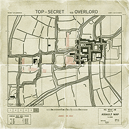
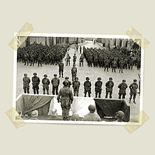
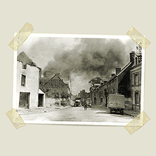

Date: 12 of June, 1944, 1345 Hours
Objectives:
Allies: Capture and secure the city of Carentan.
Axis: Defend the city at all costs.
The event:
The Battle of Carentan was an engagement in World War II between airborne forces of the United States Army and the German Wehrmacht during the Battle of Normandy
The battle took place between 10 and 15 June 1944, on the approaches to and within the city of Carentan, France. The attacking 101st Airborne Division, landed by parachute on 6 June as part of the American airborne landings in Normandy,
was ordered to seize Carentan. This encounter is based off of a scene in the popular HBO Miniseries Band of Brothers rather than the actual topography.


